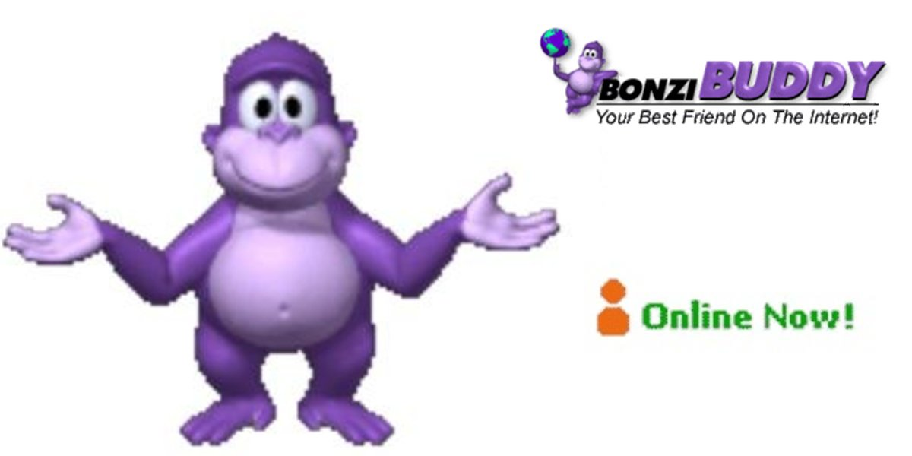

BonziBuddy : Le Compagnon Digital Qui Revient Pour Vous Faire Sourire !
Dans les années 2000, BonziBuddy était bien plus qu'un simple programme. Avec son sourire malicieux et son humour décalé, il a conquis les écrans et les cœurs de millions d'utilisateurs à travers le monde. Et aujourd'hui, il revient en ligne, prêt à illuminer vos journées, où que vous soyez. Plus accessible, mais toujours aussi attachant, BonziBuddy est là pour vous faire sourire comme au bon vieux temps.

Plongée dans le passé : La vidéo de présentation originale de BonziBuddy !
Rien de tel qu'un voyage dans le temps pour redécouvrir l'essence de BonziBuddy. Nous avons retrouvé une vidéo iconique de l'époque, où notre singe favori se présentait au monde avec tout son charme rétro et son humour décalé.
Cliquez ici pour revivre cette l'introduction légendaire :
Prêt à revivre l'expérience BonziBuddy ?
Cliquez sur "Accéder à Bonzi" et laissez-vous séduire par le singe le plus célèbre du web des années 2000. BonziBuddy vous attend pour des moments inoubliables.